1008B20 power unit intermediate mount flexible block - replace
- Path
- Procedures > 10 ENGINE > 1008 POWER UNIT SUPPORTS > 1008B power unit mounting blocks > 1008B20 power unit intermediate mount flexible block - replace
- Kind
- repair procedure (removal / refitting; the operation number is the code)
- Applies to
- engines: 1.6 TS , 1.8 TS, 2.0 JTS, 2.5 V6, 3.2 V6, 1.9 JTD 8v , 1.9 JTD 16v, 2.0 JTS, 2.4 JTD 10v, 2.4 JTD 20v; all production periods
- Interactive page
- https://sloeber94.github.io/elrnDB-a156/en/#/3237450
Applies to: engines: 2.5 V6, 3.2 V6; all production periods
 Removing
Removing
 Refitting
RefittingPosition the vehicle on the ramp.
7055B54 under-engine guard - r r
1076B52 exhaust pipe (one) leaving l/h or r/h exhaust manifold - r + r
1008A44 rear rigid mount - r r
1. Undo the bolts (1a) and remove the flexible mounting for the power unit rear support (1b).
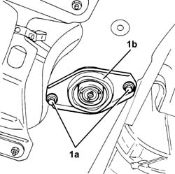
Applies to: engines: 2.5 V6, 3.2 V6; all production periods
Refitting
RemovingFit the flexible mounting for the power unit rear support and fix it to the crossmember tightening the bolts to the recommended torque.
 | Fastening | Component | Ø | Value (daNm) |
|---|---|---|---|---|
- | Bolt | INTERM RUBBER MOUNT | M8 | 3.1 - 3.8 |
1008A44 rear rigid mount - r r
1076B52 exhaust pipe (one) leaving l/h or r/h exhaust manifold - r + r
7055B54 under-engine guard - r r
Remove the vehicle from the ramp.
Applies to: engines: 1.6 TS , 1.8 TS; all production periods
Removing
Refitting7055B54 under-engine guard - r r
1008A44 rear rigid mount - r r
1. Undo the bolts (1a) and remove the flexible mounting for the power unit intermediate support (1b).
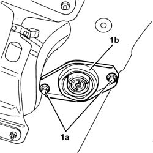
Applies to: engines: 1.6 TS , 1.8 TS; all production periods
Refitting
RemovingFit the flexible mounting for the power unit rear support and fix it to the suspension crossmember tightening the bolts to the recommended torque.
| Fastening | Component | Ø | Value (daNm) |
|---|---|---|---|---|
- | Bolt | INTERM RUBBER MOUNT | M8 | 2.7 - 3.4 |
Applies to: engines: 1.6 TS , 1.8 TS; all production periods; only with equipment: Euro 3
Removing
RefittingPosition the vehicle on the ramp.
Ensure that the ignition key is in the stop OFF, then disconnect the battery negative terminal.
 | Name | Connector |
|---|---|---|
- | Battery |
Proceed with the removal 1072C44 exhaust manifold heat shield on bulkhead - r+r .
Proceed with the removal 7055B54 under-engine guard - r r .
Proceed with the removal 1080B40 catalytic pre-converter - r r .
Proceed with the removal 1008A44 rear rigid mount - r r .
1. Undo the nuts (1a) and remove the heat shield (1b).
2. Undo the bolts (2a) and remove the flexible mounting for the power unit rear (2b).
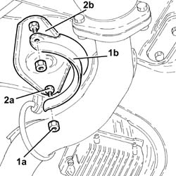
Applies to: engines: 1.6 TS , 1.8 TS; all production periods; only with equipment: Euro 3
Refitting
RemovingFit the flexible mounting for the power unit rear support and fix it tightening the bolts to the recommended torque.
| Fastening | Component | Ø | Value (daNm) |
|---|---|---|---|---|
- | Bolt | INTERM RUBBER MOUNT | M8 | (Front suspension crossmember side) 2.7 ÷ 3.4 |
Place the heat shield back in its housing and fix it using the nuts.
Proceed with the refitting 1008A44 rear rigid mount - r r .
Proceed with the refitting 1080B40 catalytic pre-converter - r r .
Proceed with the refitting 7055B54 under-engine guard - r r .
Proceed with the refitting 1072C44 exhaust manifold heat shield on bulkhead - r+r .
Connect the battery terminal (-).
Remove the car from the ramp.
Applies to: engines: 2.0 JTS, 2.0 JTS; all production periods
Removing
RefittingPosition the vehicle on the ramp.
Proceed with removal 7055B54 under-engine guard - r r .
Proceed with removal 1076B18 rigid section of exhaust pipe between catalytic converter and silencer - r + r .
Proceed with removal 1076A32 exhaust rigid mount - r r .
Position a hydraulic jack under the engine.
1. Undo the bolt (1a) and nut (1b) and remove the reinforcing link (1c).
2. Undo the bolt fixing the rear power unit rigid support to the flexible mounting.
3. Loosen the bolts fixing the rigid rear support to the gearbox and to the engine oil sump, then rotate it, as necessary, to move it away
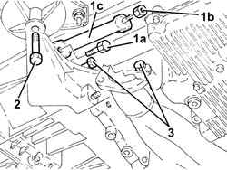
Applies to: engines: 2.0 JTS, 2.0 JTS; all production periods
1. Undo the bolts (1a) and remove the flexible mounting for the power unit rear support (1b).
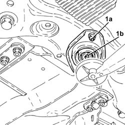
Applies to: engines: 2.0 JTS, 2.0 JTS; all production periods
Refitting
Removing1. Fit the flexible mounting for the power unit rear support (1a) and fix it to the crossmember by tightening the bolts (1b) to the recommended torque.
| Fastening | Component | Ø | Value (daNm) |
|---|---|---|---|---|
1b | Bolt | INTERM RUBBER MOUNT | M8 | (Front suspension crossmember side) 3.2 ÷ 3.9 |
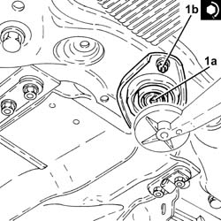
Applies to: engines: 2.0 JTS, 2.0 JTS; all production periods
1. Refit the power unit rear rigid support (1a) in its seating and secure by tightening the bolts (1b), (1c) and (1d) to the recommended torque.
| Fastening | Component | Ø | Value (daNm) |
|---|---|---|---|---|
1b | Bolt | POWER UNIT RIGID REAR MOUNT | M12 | (Gearbox side) 6.8 ÷ 8.3 |
| Fastening | Component | Ø | Value (daNm) |
|---|---|---|---|---|
1c | Bolt | POWER UNIT RIGID REAR MOUNT | M12 | (Engine oil sump side) 6.8 ÷ 8.3 |
| Fastening | Component | Ø | Value (daNm) |
|---|---|---|---|---|
1d | - | - | - | - |
2. Refit the reinforcement strut (2a) and tighten the bolt (2b) and nut (2c) to the specified torque.
| Fastening | Component | Ø | Value (daNm) |
|---|---|---|---|---|
2b | Bolt | POWER UNIT REAR RIGID SUPPORT REINFORCEMENT ROD.... | M12 | 6.8 ÷ 8.3 |
| Fastening | Component | Ø | Value (daNm) |
|---|---|---|---|---|
2c | Nut | POWER UNIT REAR RIGID SUPPORT REINFORCEMENT ROD.... | M12 | 5.0 ÷ 6.1 |
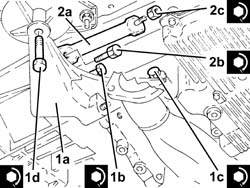
Applies to: engines: 2.0 JTS, 2.0 JTS; all production periods
Remove the hydraulic jack from beneath the engine
Proceed with refitting 1076A32 exhaust rigid mount - r r .
Proceed with refitting 1076B18 rigid section of exhaust pipe between catalytic converter and silencer - r + r .
Proceed with refitting 7055B54 under-engine guard - r r .
Remove the car from the ramps.
Applies to: engines: 1.9 JTD 8v , 2.4 JTD 10v; all production periods
Removing
Refitting1076B50 exhaust pipe attachment to engine - r + r
1008A44 rear rigid mount - r r
1. Undo the bolts (1a) and remove the flexible mounting for the power unit rear support (1b).
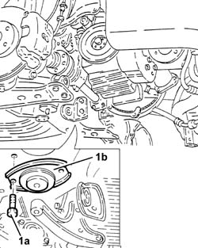
Applies to: engines: 1.9 JTD 8v , 2.4 JTD 10v; all production periods
Refitting
RemovingFit the flexible mounting for the power unit rear support and fix it tightening the bolts to the recommended troque.
| Fastening | Component | Ø | Value (daNm) |
|---|---|---|---|---|
- | Bolt | INTERM RUBBER MOUNT | M8 | 2.7 - 3.4 |
Applies to: engines: 1.9 JTD 16v; all production periods
Removing
RefittingPosition the vehicle on the ramp.
Proceed with removal 7055B54 under-engine guard - r r .
Proceed with removal 1008A44 rear rigid mount - r r .
1. Undo the bolts (1a) and remove the flexible mounting for the power unit rear support (1b).
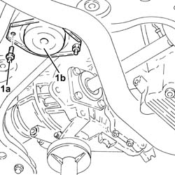
Applies to: engines: 1.9 JTD 16v; all production periods
Refitting
Removing1. Place the flexible mounting for the power unit rear support (1a) back in its housing and secure it by tightening the bolts (1b) to the recommended torque.
| Fastening | Component | Ø | Value (daNm) |
|---|---|---|---|---|
1b | - | - | - | - |
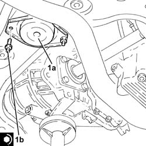
Applies to: engines: 1.9 JTD 16v; all production periods
Proceed with refitting 1008A44 rear rigid mount - r r .
Proceed with refitting 7055B54 under-engine guard - r r .
Remove the car from the ramps.
Applies to: engines: 2.4 JTD 20v; all production periods
Removing
RefittingPosition the vehicle on the ramp.
Proceed with removal 7055B54 under-engine guard - r r .
Proceed with removal 1076B70 exhaust pipe between pre-catalytic converter and catalytic converter - r r .
Proceed with removal 1008A44 rear rigid mount - r r .
1. Undo the bolts (1a) and remove the flexible mounting for the power unit rear support (1b).
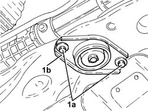
Applies to: engines: 2.4 JTD 20v; all production periods
Refitting
Removing1. Place the flexible mounting for the power unit rear support (1a) back in its housing and secure it by tightening the bolts (1b) to the recommended torque.
| Fastening | Component | Ø | Value (daNm) |
|---|---|---|---|---|
1b | Bolt | INTERM RUBBER MOUNT | M8 | (Front suspension crossmember side) 3.3 ÷ 3.9 |
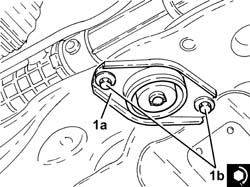
Applies to: engines: 2.4 JTD 20v; all production periods
Proceed with refitting 1008A44 rear rigid mount - r r .
Proceed with refitting 1076B70 exhaust pipe between pre-catalytic converter and catalytic converter - r r .
Proceed with refitting 7055B54 under-engine guard - r r .
Remove the car from the ramps.
Topics linked from this page (10)
- 1008A44 rear rigid mount - r r
- 1072C44 exhaust manifold heat shield on bulkhead - r+r
- 1076A32 exhaust rigid mount - r r
- 1076B18 rigid section of exhaust pipe between catalytic converter and silencer - r + r
- 1076B50 exhaust pipe attachment to engine - r + r
- 1076B52 exhaust pipe (one) leaving l/h or r/h exhaust manifold - r + r
- 1076B70 exhaust pipe between pre-catalytic converter and catalytic converter - r r
- 1080B40 catalytic pre-converter - r r
- 7055B54 under-engine guard - r r
- A1B Battery ( BATTERY NEGATIVE )
Topics that link to this page (13)
- 1020D36 flywheel end oil seal - replace for manual gearbox with hydraulic selection versions
- 1020D38 flywheel side oil seal - replace
- 1024B10 engine flywheel - r + r for versions with manual gearbox
- 1024B11 engine flywheel - r r for manual gearbox with hydraulic selection versions
- 1810A20 clutch - r + r
- 1810A28 clutch - r r for manual gearbox with hydraulic selection versions
- 1820A24 thrust bearing linkage - r + r
- 2110A10 manual gearbox and differential - r + r
- 2110A11 manual gearbox with differential - r r for versions with hydraulic selection
- 2110C22 gear input shaft seals - r r
- 2110C24 seals for gearbox input shaft - r r for manual gearbox with hydraulic selection versions
- 4410D13 front suspension beam - r r
- 5530A14 alternator - r+r for versions with air conditioner